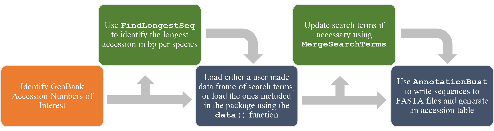
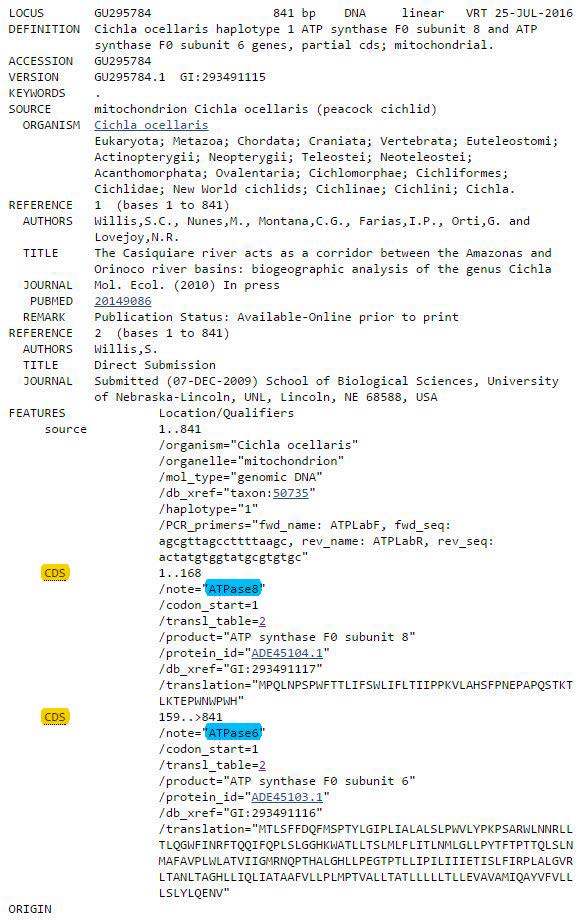

AnnotationBustR Tutorial
Samuel R. Borstein
04 September, 2026
Source:vignettes/AnnotationBustR-vignette.Rmd
AnnotationBustR-vignette.Rmd1: Introduction
This is a tutorial for using version 2.0 and up of the R package
AnnotationBustR. AnnotationBustR reads in
sequences from GenBank and allows you to quickly extract specific parts
and write them to FASTA files given a set of search terms. This is
useful as it allows users to quickly extract parts of concatenated or
genomic sequences based on GenBank features and write them to FASTA
files, even when feature annotations for homologous loci may vary
(i.e. gene synonyms like COI, COX1, COXI all being used for cytochrome
oxidase subunit 1).
In this tutorial we will discuss some new changes to
AnnotationBustR, cover the basics of how to use
AnnotationBustR to extract parts of a GenBank
sequences.This is considerably faster than extracting them manually and
requires minimal effort by the user. While command line utilities like
BLAST can also work, they require the building of databases to search
against and can be computationally intensive and can have difficulties
with highly complex sequences, like trans-spliced genes. They also
require a far more complex query language to extract the subsequence and
write it to a file. For example, it is possible to extract into FASTA
files every subsequence from a mitochondrial genome (38 sequences, 13
CDS, 22 tRNA, 2rRNA, 1 D-loop) in 15-30 seconds, which is significantly
faster than if you were to do it manually from the online GenBank
features table. In this tutorial, we will discuss how to install
AnnotationBustR, the basic AnnotationBustR
pipeline, and how to use the functions that are included in
AnnotationBustR.
2: What’s new in AnnotationBustR 2.0+
2.1: New Dependencies Provide Up To Date Access, New Features, and Stability
This new version of AnnotationBustR is a complete
rewrite of AnnotationBustR. Notably,
AnnotationBustR 2.0+ now uses various
Bioconductor dependencies to extract subsequences.
Previously, AnnotationBustR accessed subsequences through
the ACNUC via the package seqinr. There are several reasons
for this change:
- The GenBank version accessed by
seqinris quite out of date. We can see that the version of GenBank being used by ACNUC inseqinris from 2021. Thus, newer accessions were not accessible inAnnotationBustR. We can see this by running the following:
ACNUC.GB.INFO <- seqinr::choosebank("genbank", infobank=T)
ACNUC.GB.INFO#return info on dateSeveral users reported connectivity issues, specifically with connecting to ACNUC via
seqinrgetting server connection issues or having their connection dropped with the ACNUC server. We now retrieve accessions from NCBI directly through therentrezpackage, which is more stable.ACNUC via
seqinrdid not always provide access to certain refseq sequences. These are now accessible in the current version written withrentrezand variousBioconductorpackages.ACNUC had its own predefined tags for feature subsequences. The new version of
AnnotationBustRnow parses GenBank feature files directly, allowing for a more flexible capture of potential feature types.
2.2: Other Minor New Features
Users no longer have to provide a translation code when requesting coding sequences be translated.
Users can now request coding sequences to be returned as DNA or the translated sequence or both.
Accession tables written by AnnotationBustR now contain a citation for the generation of sequence data, allowing users to properly cite and give credit to the researchers who generated the sequence.
3: Installation
3.1: Installation From CRAN
In order to install the stable CRAN version of the AnnotationBustR package:
install.packages("AnnotationBustR")3.2: Installation of Development Version From GitHub
While we recommend use of the stable CRAN version of this package,
you can use the R package pak to install the development
version of the package from GitHub if for any reason you wish to use it
:
#1. Install 'devtools' if you do not already have it installed:
install.packages("devtools")
#2. Load the 'devtools' package and install the development version of
#'AnnotationBustR' from GitHub:
library(devtools)
pak::pak("sborstein/AnnotationBustR") # install the package from GitHub
library(AnnotationBustR)# load the package4: Using AnnotationBustR
To load AnnotationBustR and all of its functions/data:
library(AnnotationBustR)It is important to note that most of the functions within
AnnotationBustR connect to sequence databases and require
an internet connection.
##4.0: AnnotationBustR Work Flow Before we begin a tutorial on how to
use AnnotationBustR to extract sequences, lets first discuss the basic
workflow of the functions in the package (Fig. 1). The orange box
represents the step that occur outside of using
AnnotationBustR. The only step you must do outside of
AnnotationBustR is obtain a target list of accession
numbers. This can be done either by downloading the accession numbers
themselves from GenBank (https://www.ncbi.nlm.nih.gov/nuccore) or using R
packages like ape, seqinr and
rentrez to find accessions of interest in R. All boxes in
blue in the graphic below represent steps that occur using
AnnotationBustR. Boxes in green represent steps that are
not mandatory, but may prove to be useful features of
AnnotationBustR. In this tutorial, we will go through the
steps in order, including the optional steps to show how to fully use
the AnnotationBustR package.

Fig. 1: AnnotationBustR Workflow. Steps in orange occur outside the package while steps in blue are core parts of AnnotationBustR and steps in green represent optional steps
For this tutorial we will be extracting loci from the mitochondrial
genomes of a fish genus, Barbonymus. We’ll start off by using
the R package reutils to search for accessions to use in
this tutorial. There are a variety of R packages that can be used to
find accessions you may want to extract subsequences from
(i.e. seqinr,rentrez,reutils) or
you can perform a search on the NCBI Database website (https://www.ncbi.nlm.nih.gov/nuccore) and download a
list of accession numbers that can then be read into R.
#install (if necessary) and load reutils
#install.packages("rentrez")#install if necessary
library(rentrez)Lets pretend we wanted to search for mitochondrial genomes. We could perform a search using the following.
#search for Barbonymus mitogenome sequences
demo.search <- rentrez::entrez_search(db = "nuccore", term = "Barbonymus[orgn] AND complete genome[title]", use_history = TRUE)#search
accessions <- rentrez::entrez_fetch(db = "nuccore", web_history = demo.search$web_history, rettype = "acc")#fetch accessions
accessions <- strsplit(accessions, "\n")[[1]]#split out accessions from new line charactersWe can see that this returns ten complete mitochondrial genome sequences from GenBank for Barbonymus species. We’ll be using these accessions later in this tutorial.
4.1:(Optional Step) Finding the Longest Available
AnnotationBustR’s FindLongestSeq function finds the
longest available sequence for each species in a given set of GenBank
accession numbers. All the user needs is to obtain a list of GenBank
accession numbers they would like to input. The only function argument
for FindLongestSeq is Accessions, which takes
a vector of accession numbers as input. We can run the function below on
the six Barbonymus accessions we found above by:
#Create a vector of GenBank nucleotide accession numbers. In order this contains accessions
my.longest.seqs<-FindLongestSeq(accessions)#Run the FindLongestSeq function
my.longest.seqs#returns the longest seqs found per speciesIn this case we can see that the function worked as it only returned accession PP937076 (16577 bp) for Barbonymus schwanefeldii which was longer than accessions AP011317.1, KU498040.2, KU233186.2, KJ573467.1 (16577, 16570,16478, and 16576 bp respectively) as well as the single accessions for Barbonymus altus and Barbonymus gonionnotus. The table returns a three-column data frame with the species name, the corresponding accession number, and the length.
4.2: Load a Data Frame of Search Terms of Gene Synonyms to Search With:
AnnotationBustR works by searching through the
annotation features table for a feature of interest using search terms
for it (i.e. possible synonyms it may be listed under). These search
terms are formatted to have three columns:
- Feature: The name you wish to refer to for a feature. This also controls the names of the FASTA files written for when that feature is extracted. It is important that you use names that will not confuse R, so don’t start these with numbers or include other characters like “.” or “-” that R uses for math.
- Type: The type of sequence to search for. For example, CDS, tRNA,
rRNA, misc_RNA, D-Loop, or misc_feature to name a few. Features are
parsed in
AnnotationBustRdynamically, so any feature type should be extractable. - Name: A possible synonym that the feature could be listed under that you wish to search for.
For extracting introns and exons, an additional fourth column is needed (which will be discussed in more detail later in the tutorial): -IntronExonNumber: The number of the intron or exon to extract (e.g. intron 2).
Below (Figure 2) is an example of where these corresponding items would be in the GenBank features table:
Fig. 2: GenBank features annotation for accession G295784.1 that contains ATP8 and ATP6. The words highlighted in yellow would fall under the column of Type. Here they are both CDS. The type of sequence is always listed farthest to the left in the features table. Colors in blue indicate terms that would be placed in the Name column, here indicating that the two CDS in this example are ATP8, labeled as ATPase8 and ATP6 respectively.
So, if we wanted to use AnnotationBustR to capture these and write them to a FASTA, we could set up a data frame that looks like the following.
## Feature Type Name
## 1 ATP8 CDS ATPase8
## 2 ATP6 CDS ATPase6While AnnotationBustR will work with any data frame formatted as discussed above, we have included in it pre-made search terms for animal and plant mitochondrial DNA (mtDNA), chloroplast DNA (cpDNA), and ribosomal DNA (rDNA). These can be loaded from AnnotationBustR using:
#Load in pre-made data frames of search terms
data(mtDNAterms)#loads the mitochondrial DNA search terms for metazoans
data(mtDNAtermsPlants)#loads the mitochondrial DNA search terms for plants
data(cpDNAterms)#loads the chloroplast DNA search terms
data(rDNAterms)#loads the ribosomal DNA search termsThese data frames can also easily be manipulated to select only the
loci of interest. For instance, if we were only interested in tRNAs from
mitochondrial genomes, we could easily subset out the tRNAs from the
premade mtDNAterms object by:
data(mtDNAterms)#load the data frame of mitochondrial DNA terms
tRNA.terms <- mtDNAterms[mtDNAterms$Type=="tRNA",]#subset out the tRNAs into a new data frame4.3:(Optional Step) Merge Search Terms If Neccessary
While we have tried to cover as many synonyms for genes in our
pre-made data frames, it is likely that some synonyms may not be
represented due to the vast array of synonyms a single gene may be
listed under in the features table. To solve this we have included the
function MergeSearchTerms.
For example, let’s imagine that we found a completely new annotation
for the gene cytochrome oxidase subunit 1 (COI) listed as CX1. The
MergeSearchTerms function only has two arguments,
..., which takes two or more objects of class
data.frame and the logical Sort.Genes, which
We could easily add this to other mitochondrial gene terms by:
#Add imaginary gene synonym for cytochrome oxidase subunit 1, CX1
add.name <- data.frame("COI","CDS", "CX1", stringsAsFactors = FALSE)
colnames(add.name) <- colnames(mtDNAterms)#make the columnames for this synonym those needed for AnnotationBustR
#Run the merge search term function without sorting based on gene name.
new.terms <- MergeSearchTerms(add.name, mtDNAterms, SortGenes=FALSE)
#Run the merge search term function with sorting based on gene name.
new.terms <- MergeSearchTerms(add.name, mtDNAterms, SortGenes=TRUE)We will use this function again in a more realistic example later in this vignette.
4.4 Extract sequences with AnnotationBust
The main function of AnnotationBustR is AnnotationBust.
This function extracts the sub-sequence(s) of interest from the
accessions and writes them to FASTA files in the current working
directory. In addition to writing sub-sequences to FASTA files,
AnnotationBust also generates an accession table for all
found sub-sequences written to FASTA files which can then be written to
a csv file using base R write.csv. AnnotationBustR requires
at least two arguments, a vector of accessions for
Accessions and a data frame of search terms formatted as
discussed in 3.2 and 3.3 for Terms.
Additional arguments include the ability to specify duplicate genes
you wish to recover as a vector of gene names using the
Duplicates argument and specifying the number of duplicate
instances to extract using a numeric vector (which must be the same
length as Duplicates) using the
DuplicateInstances argument.
AnnotationBustR also has arguments to translate coding sequences into
the corresponding peptide sequence setting the
TranslateSeqs argument to TRUE. If
TranslateSeqs=TRUE, users should also specify the GenBank
translation code number corresponding to their sequences using the
TranslateCode argument. A list of GenBank translaton codes
for taxa is available here: https://www.ncbi.nlm.nih.gov/Taxonomy/Utils/wprintgc.cgi
An additional argument of AnnotationBust is
DuplicateSpecies which when set to
DuplicateSpecies=TRUE adds the accession number to the
species name for the FASTA file. This can be useful for later analyses
involving FASTA files as duplicate names in FASTA headers can pose
problems with some programs. It is important to note that if users
select DuplicateSpecies=TRUE that while FASTA file will
contain species names with their respected accession number, the
corresponding accession table will either have a single row per species
containing all the accession numbers for each subsequence locus found
for that species seperated by a comma or a seperate row for each
accession number dependent on what the user chooses for the
TidyAccessions argument (see description below).
The argument Prefixcan either be NULL or a
character vector of length 1. If Prefix is not NULL it will
add the prefix specified to all FASTA files. If left as
Prefix=NULL files names will just be the name of the
locus.
The final argument TidyAccessions effects the format of
the final accession table. If TidyAccessions=TRUE, all
sequence for a single species will be collapsed into a single cell per
locus and accessions will be seperated by commas. If
TidyAccessions=FALSE it will leave each accession number in
its own row in the accession table.
For the tutorial, we will use the accessions we created in examples
3.1 in the object my.longest.accessions. This is a vector
that contains three accessions for mitogenomes of three species of
Barbonymus. These accessions provide a good highlight as to the
utility of this package.If we look at the annotations of these three
accessions(https://www.ncbi.nlm.nih.gov/nuccore/AP011317.1,https://www.ncbi.nlm.nih.gov/nuccore/AP011181.1,https://www.ncbi.nlm.nih.gov/nuccore/AB238966.1),
we can see that while AP011317 and AP011181 are annotated with similar
nomenclature, AB238966 differs substantially (e.x. COI vs CO2, Cyt b vs
Cb, etc.). For this example, we will use all the arguments of
AnnotationBust to extract all 38 subsequences for the four
accessions (22 tRNAs, 13 CDS, 2 rRNAs, and 1 D-loop). For this we will
have to specify duplicates, in this case for tRNA-Leu and tRNA-Ser,
which occur twice in vertebrate mitogenomes. We will translate the CDS
using TranslateSeqs = "Both" to return both the DNA and
peptide sequence. Because we have a single accession for each species,
we will specify DuplicateSpecies=FALSE and have out FASTA
files output with the prefix “Demo” by specifying
Prefix="Demo" and with TiddyAccessions=TRUE.
This will create 38 FASTA files for all mitochondrial loci in the
mitochondrial genome in the working director with the prefix “Demo”.
#run AnnotationBust function for two duplicate tRNA genes occuring twice and translate CDS
my.seqs <- AnnotationBust(Accessions=my.longest.seqs$Accession, Terms=mtDNAterms,Duplicates=c("tRNA_Leu","tRNA_Ser"), DuplicateInstances=c(2,2), TranslateSeqs="Both", DuplicateSpecies=TRUE, Prefix="Demo", TidyAccessions=TRUE)
#We can return the accession table and write it to a CSV file.
my.seqs#retutn the accession table
write.csv(my.seqs, file="AccessionTable.csv")#Write the accession table to a csv fileWe can also use AnnotationBustR to extract introns from
sequences. One limitation to this is that the introns must be annotated
within the subsequence, which is lacking from some accessions (e.x. not
all chloroplasts have introns annotated). As stated above, this requires
the use of a fourth column in the search terms, labelled
IntronExonNumber, which is used to find which number intron
is to be extracted. For instance, lets imagine we want to extract the
coding sequence matK and exon 2 and intron 1 of trnK from the
chloroplast genomes KX687911.1 and KX687910.1 We could set up the search
terms as follows using the current cpDNAterms:
#Subset out matK from cpDNAterms
cds.terms <- subset(cpDNAterms,cpDNAterms$Feature=="matK")
#Create a vecotr of NA so we can merge with the search terms for introns and exons
cds.terms <- cbind(cds.terms,(rep(NA,length(cds.terms$Feature))))
colnames(cds.terms)[4] <- "IntronExonNumber"
#Prepare a search term table for the intron and exons to remove
#We can start with the cpDNAterms for trnK
IntronExon.terms <- subset(cpDNAterms,cpDNAterms$Feature=="trnK")
#As we want to go for two exons, we will want the synonyms repeated as we are doing and intron and an exon
IntronExon.terms <- rbind(IntronExon.terms,IntronExon.terms)#duplicate the terms
IntronExon.terms$Type <- rep(c("intron","intron","exon","exon"))#rep the sequence type we want to extract
IntronExon.terms$Feature <- rep(c("trnK_Intron","trnK_Exon2"),each=2)
IntronExon.terms <- cbind(IntronExon.terms,rep(c(1,1,2,2)))#Add intron/exon number info
colnames(IntronExon.terms)[4] <- "IntronExonNumber"#change column name for number info for IntronExon name
#We can then merge everything together with MergeSearchTerms terms
IntronExonExampleTerms <- MergeSearchTerms(IntronExon.terms,cds.terms)
#Run AnnotationBust
IntronExon.example <- AnnotationBust(Accessions=c("KX687911.1", "KX687910.1"), Terms=IntronExonExampleTerms, Prefix="DemoIntronExon")4.5 Troubleshooting
As AnnotationBustR is dependent on access to online
databases, it is important that you make sure you have a reliable
internet connection while using the package, especially for the
FindLongestSeq and AnnotationBust functions.
Additionally, as these functions require access to NCBI, if you have
internet access yet are still having issues, check that these sites and
there servers are not down or undergoing maintenance, which they do
occasionally. For AnnotationBust, you will get the
followingCould not connect to NCBI message printed to the
screen in the event that it cannot connect to the NCBI database.
The AnnotationBust function may also provide the
following warnings and messages as well as report the following in the
accessions table:
Working On Accession 1 of 1: ACCESSION# not found on NCBI.
This indicates that the accession number was not found on NCBI. You
should check that it is correct and exists. This will also fill in the
accession table with Failed to find ACCESSION#. Here,
ACCESSION# will be the actual accession.
5: Final Comments
Further information on the functions and their usage can be found in
the helpfiles help(package=AnnotationBustR). For any
further issues and questions send an email with subject ‘AnnotationBustR
support’ to borstein@txstate.edu or post to the issues section on
GitHub(https://github.com/sborstein/AnnotationBustR/issues).